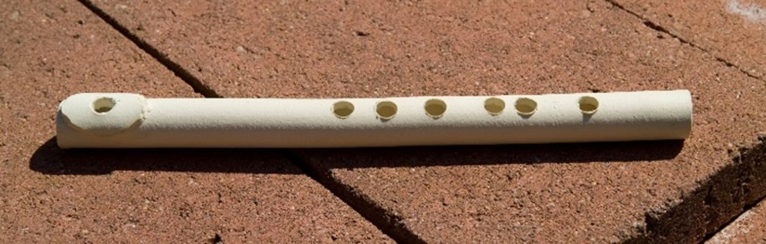
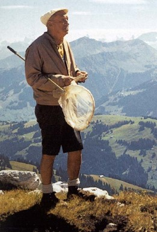

Prof. Rob Wood, the instructor in charge of “Engineering the Acoustical World,” had created a new course in SEAS at Harvard and assembled a great teaching team. They invited me to link math and music for two 1.5-hour classes on February 13 and 15, 2018. I designed, developed, and implemented class materials linking music theory, instrument theory, and engineering acoustics. Entitled “What’s so great about the overtone series?”—the module connected the wave equation, overtone series, tuning, string harmonics, modal scales, and orchestration, something I’ve always wanted to do! I prepared seven handouts for students, faculty, and staff that made the connections for study in and outside the classroom. [Robert Wood, Charles River Professor of Engineering and Applied Sciences, Harvard]
These modules helped students develop an interdisciplinary understanding of a deep connection between music and math by solving the 1-dimensional wave equation to reveal the fundamentals of standing waves and the overtone series, both topics central to science and music, respectively. These modules resulted from Olin’s Summer Institute where faculty from different educational institutions participate in a week-long immersive experience where they explore their own upcoming educational initiatives.
Students in the course came from backgrounds in engineering and/or the liberal arts. To understand the material presented in these modules, they engaged in lifelong learning (including self-teaching unfamiliar aspects of music or math), intrinsic motivation (by virtue of enrolling in the course, they indicated a curiosity about connections between engineering and the acoustic world around them which further manifested itself in the questions they asked), preparation/scaffolding (provided for them by an excellent teaching team), application (how the harmonic series permeates engineering and music, e.g., string harmonics demonstrated live with a student cellist, wave phenomena, and my own example of how I re-orchestrated the Dvorak Eighth Symphony for a small orchestra by harnessing the overtone series to create a coherent group sound), effective communication (by providing different in-class methods for conveying the material at hand, e.g., videos, concept handouts, audio examples, and demonstrating at the piano), and stimulation/impetus (by exposing the students to different avenues for interdisciplinary connection).
This document contains the following course materials that I prepared for these two Harvard SEAS classes on the topic “What’s so great about the overtone series?”
During my earlier years at Olin (2001 – 2008), I gave courses that united engineering, science, art, and music. The below parts ii-iv give a short sampling.
Prof. Chris Lee and I last offered this course in Fall 2007. Students have been asking for it ever since.
One of our projects involved students making a flute, such as that shown in Figure 7.
Figure 7: A clay flute engineered by an Olin student as a final project.
Many of our students are already multi-talented so Prof. Lee and I wanted to draw on that by creating a course that further develops the multidisciplinarity of our students. Engineering the Orchestra, part 1, also offered a tangible example of Olin’s dedication to multidisciplinary education, thus helping build the college.
Students engaged with themes of lifelong learning (through research according to their interests), intrinsic motivation (enrolled students had self-selected due to their own desire to understand, design, and make musical instruments), stimulation/impetus (different approaches to instrument production, e.g., using different materials to realize a flute), preparation/scaffolding plus application (students engineered a PVC pipe didgeridoo, PVC pipe flute, and cigar box guitar before embarking on their own final instrument design projects), feedback (from peers and professors), revision (iterative approaches to each application mentioned above), and effective communication (final project proposal and final project report).
It was neat teaching Engineering the Orchestra, parts I and II, as back-to-back half-semester courses in Fall 2007 because they offered timely connections between the two.
Initially, I created part II, not only to link with part I, but also in response to student requests for a sequel to the Wired Ensemble. Part II provides ‘just-in-time’ harmonic and contrapuntal theory for the study of instrumentation with an emphasis on composing for combinations of strings, woodwinds, brass, and percussion. Equipped with a technical understanding of orchestral instruments as a result of Part I, students connect the art of ensemble writing to the physical understanding of instruments. As a result, they can reason from several vantage points as to why, for example, a particular harmonic voicing might be preferable to another. Finally, while engaged in writing short studies for mixed ensembles that underwent review and revision, students looked forward to composing their Opus 1, a culminating work for multiple instruments.
In times past, whenever I felt challenged or curious about life’s journey, I sought heroes. Since childhood, my heroes have included ‘all those dead composers.’ I took them along life’s journey, reading their lives, letters, and playing their works. During my graduate years at MIT, while linking engineering with music and maintaining professional lives in each, I found myself encountering issues that seemed singular to my pursuit of engineering and music. Now that I had become a ‘Two-part Invention,’ I found no lack of ideas. But the pressing issue was time. And that was only the beginning. How does one chart a productive course that does not easily fit within any one discipline? Once again, as in my childhood, I found heroes. They taught me how to navigate dual professions. They helped me accept that time would always be an issue, and they inspired me: Despite great innate gifts, Leonardo, Nabokov, Bach, and Borodin worked hard, often passionately and even obsessively. They stayed true to their creative core and stoked their intellectual curiosity.
For many years, I felt a strong compulsion to bring their example to contemporary life. As a first step, I designed “Heroes for the Renaissance Engineer” to speak directly to Olin students, many of whom have talents in music, art, science, math, and engineering, thus tapping their own interests (intrinsic motivation). In Heroes, students seek answers to the questions: To what extent have artists exhibited extraordinary knowledge and ability in science? Does this necessarily infuse their art, and if so, how? (stimulation/impetus)
To answer these questions, they study source documents and analyze the works of Vladimir Nabokov (writer and lepidopterist), Leonardo da Vinci (artist and engineer), J.S. Bach (composer, performer, and acoustician), and Alexander Borodin (composer and chemist), shown in Figure 8. By examining source documents and what they reveal, students develop an appreciation for primary source material that can lead to lucid evaluation of documents throughout life (lifelong learning and effective communication). “Just-in-time learning” gives context for answering the above questions. For example, starting with a crash course in Lepidoptera (an order of insects comprising butterflies and moths), students go on a “Lit/Lep” hunt through two of Nabokov’s works (Speak, Memory and Lolita), critical for understanding his many lepidopteral references (preparation/ scaffolding). For their final projects, students have the opportunity to integrate their artistic and engineering sides by creating works that call upon both. Each writes a proposal, receives peer and professor feedback, then submits successive versions of the project for review (revision and application)—till the final deliverable.
Figure 8: Nabokov with his butterfly net, Leonardo (self-portrait), Bach holding a canon that never ends (loops), and a photo of Borodin.
In sum, Nabokov, Leonardo, Bach, and Borodin each achieved a self-sufficiency enabling the articulation and realization of work that reveals a singular vision, shaped in part by fluency in both technical and artistic disciplines. They help develop students of today by demonstrating the benefits of speaking two languages with depth and passion, resulting in inimitable work. They set examples that students might emulate: the predilection for invention and discovery; the chance to contribute in art, science, and maybe in both; and the almost inevitable signature that such fluency bestows on the work they undertake.
N.B. In Fall 2020, I updated this course and presented it virtually for Olin first-years, as part of Olin's response to the covid-19 pandemic. The 2020 version became the tenth iteration; earlier iterations occurred at Tufts University, Olin College, and the Juilliard School (Graduate Division).